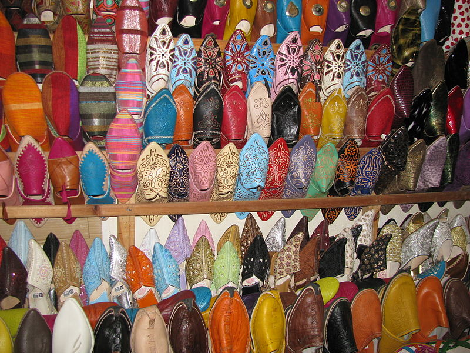
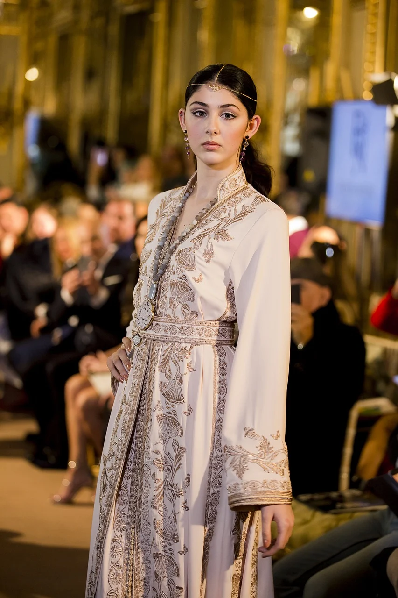
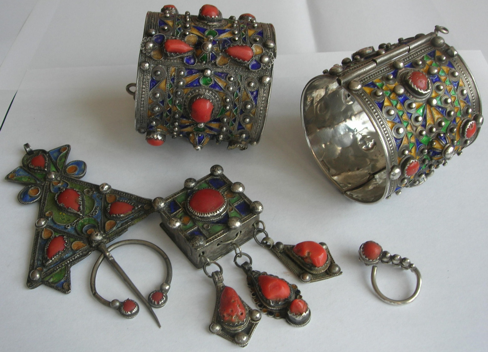

Djellabas |
La djellaba marocaine est l’une des formes les plus populaires de vêtements traditionnels marocains. Il s’agit d’une longue robe que certains assimilent à une robe de chambre et qui se décline dans toutes sortes de textiles, ornée de perles, de coutures élaborées, de dentelle ou de mailles.
Comme de nombreuses traditions marocaines, les djellabas sont profondément ancrées dans la culture et l’histoire berbères. La djellaba marocaine traditionnelle était à l’origine faite de laine grossière.
|

Babouches |
La babouche se fabrique au Maroc depuis des siècles. Les fabricants appliquent ce savoir faire ancestral à la réalisation des babouches.La babouche au Maroc se dit "belgha" et diffère d'une région à une autre par ses motifs et par sa forme, néanmoins elle reste la chaussure la plus portée car légère et pratique.
Traditionnellement fabriquées en cuir de chèvre ou de mouton, elles étaient autrefois la chaussure de tous les jours par excellence.
|

Caftan |
Le Caftan est une longue robe que les femmes marocaines portent à la maison mais également lorsqu’elles assistent à des événements spéciaux,il fait partie du patrimoine culturel du Maroc. Il a toujours eu une place de choix dans la garde-robe marocaine, et aujourd'hui trouve ses lettres de noblesse dans la haute-couture.
|

Bijoux berbères |
Chez les populations amazighs, le bijou a toujours été un élément indispensable du costume. Les femmes le portaient pour accessoiriser leur tenue mais aussi pour se protéger des agresseurs ou encore de la maladie. En argent, en bronze ou en métal…
|